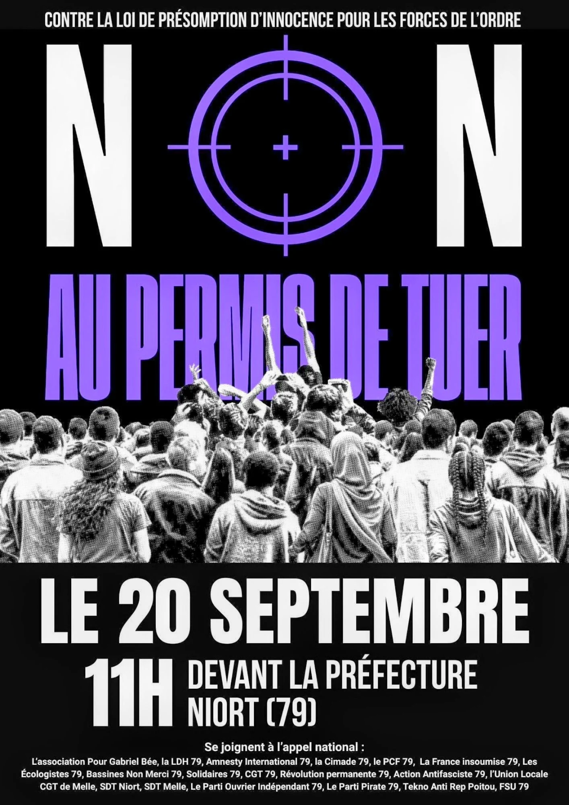

Annonce archivée
À Niort, appel à se rassembler le 20 septembre contre le « permis de tuer »
Date indiquée par Facebook · 16 septembre 2026
Texte conservé avec la publication
Rassemblement contre la loi de présomption d'innocence pour les forces de l'ordre
Dimanche 20 septembre
11h devant la Préfecture Niort - 79
Repères éditoriaux
Nous avons relayé le rendez-vous du dimanche 20 septembre 2026 à 11 h devant la préfecture de Niort. L’annonce d’origine intitule le rassemblement « contre la loi de présomption d’innocence pour les forces de l’ordre ». La vidéo associée montre le rassemblement.

Sources
Archive rouge · export Facebook · AR-0002-FB-00690
À lire aussi · À Niort, rassemblement du 20 septembre contre le « permis de tuer »